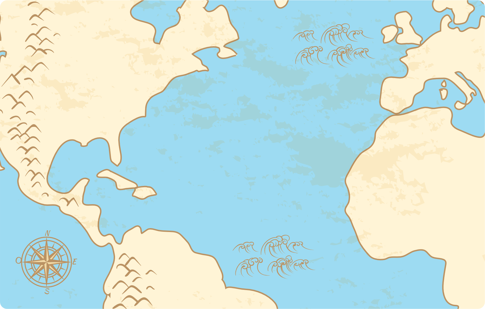

Primer viaje
Segundo viaje
Tercer viaje
Cuarto viaje
Continuar
De Sanlúcar de Barrameda a Trinidad, Golfo de Paria, Bocas de Orinoco (1498-1500)
De Sevilla a Guadalupe, Puerto Rico, Santo Domingo, Cuba, Jamaica (1493-1496)
De España a Jamaica, Costa de Cuba, Isla de Guanaja, Golfo de Honduras, Nicaragua, Costa Rica, Panamá (1502-1504)
De Puerto de Palos a Isla Cayo Samana (3 de agosto a 12 de octubre de 1492)
¿Por qué buscaban los reinos europeos explorar rutas alternativas de comercio?
{{i}}
¿Qué hizo Cristóbal Colón en 1492?
{{i}}
¿Cuántas décadas pasaron entre la decisión de buscar nuevas rutas hacia Asia y la colonización de la Nueva España?
{{i}}
¿En qué siglo llegó Cristóbal Colón al continente americano?
{{i}}